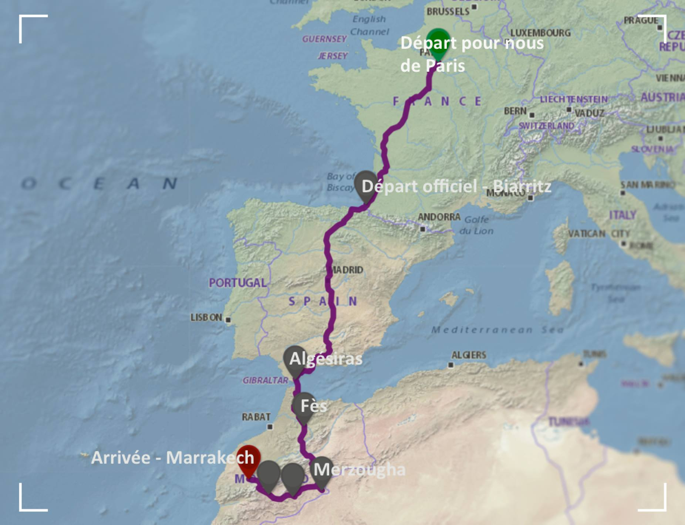
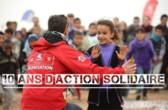

25 ans de 4L Trophy
25 ans d'aide humanitaire et de raid dans le désert!

Une Aventure à 4 roues
Quelque soit le véhicule, on peut faire la différence!

Changer le Monde
Pour les Enfants du Désert!
ACCUEIL
Raid 4L Trophy
Le Raid 4L Trophy est un raid automobile solidaire destiné aux jeunes de moins de 28 ans et couru exclusivement en Renault 4. Créé par Jean-Jacques Rey en 1997, il est organisé par l'entreprise Desertours en partenariat avec l'École supérieure de commerce de Rennes.
Une Cause

Deux Etudiants

LA COURSE
Du 17 au 27 Fevrier 2022!

Plan de la Course
Départ le 17 Fevrier 2022!
Une course vers le Maroc, à travers la France et l'Espagne soutenue par nos sponsor. Nous avons besoins de vous tout au long de nos 6000km!
SPONSOR
Top Départ!
Plus que quelques semaines!
La course commence le 17 Fevrier 2022, n'attendez plus et rejogniez la course en devenant notre sponsor!
SPONSOR
LES ENFANTS DU DESERT
Courir, oui, mais pas pour rien !
Depuis 2005 les étudiants du 4L Trophy expriment leur solidarité dans les zones les plus reculées du Maroc en partenariat avec une vingtaine de structures locales. L’objectif est clair : l’accès à l’éducation pour tous les enfants.
Le projet comprend l’acheminement de dons matériels et financiers : offrir un cartable c’est bien, construire une école, c’est encore mieux ! Les Trophistes font les deux ! Des milliers d’objets transportés dans les coffres bondés des 4L (fournitures scolaires, matériel médical et informatique, équipements sportifs, vêtements, jouets etc.) : c’est quelque 30 tonnes chaque année qui profitent à près de 20 000 enfants de la Province d’Errachidia.
Les trophistes sont à l’origine de la construction de 30 écoles primaires, d’aménagements pour enfants handicapés, de blocs sanitaires, de puits etc. Chaque participant au 4L Trophy amène sa pierre à ce magnifique édifice !
+ 22 salles de classes
